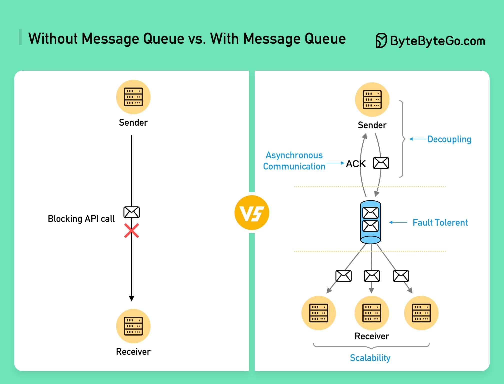

Queues
Message queues for asynchronous, decoupled communication — plus modern delivery semantics, logs, and backpressure.
In this lesson
Why queues exist
Most large systems contain work that does not need to happen synchronously within the user's request. When a user uploads a photo, they want an immediate "upload complete" response — they do not want to wait while the server generates thumbnails, runs content moderation, extracts EXIF data, and updates ten denormalized feeds. A message queue lets the request handler do the minimum needed to respond, then hand off the heavy work to be processed later by separate workers.
A queue is fundamentally a buffer that sits between a producer (the sender that creates work) and a consumer (the receiver that processes it). The defining property is that the two sides do not have to be online or available at the same time. The producer appends a message and moves on; the message is held durably until a consumer is ready to read and process it. This temporal decoupling is what makes queues so powerful in distributed systems.
The mechanics: producers, consumers, and ordering
The classic mental model is a FIFO line: producers add messages to the tail of the queue, and consumers read from the head. Each message typically carries a payload plus metadata (an ID, timestamp, retry count, and routing info). The broker — the server process that owns the queue — is responsible for storing messages durably and handing them out to consumers.
A typical lifecycle looks like this:
- Producer publishes a message to the broker. The broker persists it (often to disk) and acknowledges receipt to the producer.
- A consumer requests (or is pushed) the next available message.
- The consumer processes the message — resize the image, send the email, update the index.
- The consumer sends an acknowledgement (ack) back to the broker, signalling success. The broker then removes the message.
- If the consumer crashes before acking (or sends a negative ack), the broker makes the message available again so another consumer can retry it.
To prevent two consumers from grabbing the same message, traditional brokers use a visibility timeout (or an exclusive in-flight lock): once a message is handed to a consumer, it is hidden from others for a window. If the consumer acks within that window, the message is deleted; if it does not, the message reappears for redelivery.
What queues buy you
- Decoupling services. The producer only needs to know the queue exists, not who consumes from it or how many consumers there are. You can add, remove, or rewrite consumers without touching the producer.
- Load leveling / buffering. If traffic spikes to 10,000 requests/second but your workers can only process 2,000/second, a synchronous system would topple over. A queue absorbs the spike — it fills up, and workers drain it at their own sustainable pace. The queue acts as a shock absorber.
- Asynchronous work. Long-running or non-urgent tasks (image processing after upload, sending notification emails, generating reports) are pushed to the queue so the user-facing path stays fast.
- Batching. Consumers can pull many messages at once and process them together — e.g., one bulk database write instead of a thousand individual ones.
- Reliable delivery. Because messages are persisted and only deleted after a successful ack, a consumer crash does not lose work. The message is simply retried.
- Independent scaling. Producers and consumers scale separately. Add more consumer workers to drain a growing backlog without changing the producing side at all.
Common systems
You should be able to name and roughly differentiate the major options:
- RabbitMQ — a mature, feature-rich broker built on the AMQP protocol. Strong routing (exchanges, bindings), flexible delivery, delete-on-ack semantics.
- ActiveMQ — a JMS-based broker, common in Java/enterprise environments.
- AWS SQS — a fully managed, serverless queue. Standard queues (high throughput, at-least-once, best-effort ordering) and FIFO queues (strict ordering, exactly-once processing within a dedup window).
- Apache Kafka — technically a distributed commit log, not a traditional queue. Messages are retained and can be replayed by many independent consumer groups. Excellent for streaming, event sourcing, and high-throughput pipelines. (Covered in depth in lesson 39.)
Delivery guarantees, at a high level
No distributed messaging system can simultaneously guarantee that every message is delivered exactly once with zero overhead — the network can drop acks, consumers can crash mid-process, and brokers can fail over. So systems offer a spectrum of guarantees:
- At-most-once. A message is delivered zero or one times. The broker does not retry, so a lost message stays lost — but you never see duplicates. Acceptable for low-value, high-volume data like metrics samples where a dropped point is harmless.
- At-least-once. A message is delivered one or more times. The broker retries until it gets an ack, so nothing is lost — but a slow ack or a crash after processing but before acking causes duplicates. This is the most common default. The consumer must be prepared to handle the same message twice.
Queues vs logs, delivery semantics, and backpressure
The word "queue" hides two very different architectures. Knowing which one you mean — and why — is a fast way to demonstrate depth.
Brokers (delete-on-ack) vs commit logs (retain & replay)
A traditional broker (RabbitMQ, ActiveMQ, AWS SQS) treats a message as a unit of work to be consumed and destroyed. Once a consumer acks, the message is gone. The broker tracks per-message state (in-flight, acked, redelivered). This model excels at task queues: each message represents a job that exactly one worker should perform.
A distributed commit log (Kafka, Pulsar, Kinesis) treats messages as an immutable, ordered, append-only sequence retained for a configured window (hours, days, or forever). Consumers track their own offset — the position they've read up to. The log doesn't delete on read, so many independent consumer groups can read the same stream at different speeds, and you can replay from any offset to reprocess history (e.g., to rebuild a downstream store or fix a bug). This model excels at event streaming and fan-out to multiple subscribers.
| Dimension | Broker (RabbitMQ / SQS) | Log (Kafka) |
|---|---|---|
| Message lifetime | Deleted on ack | Retained for a window; replayable |
| Consumer model | Compete for messages (work sharing) | Each group reads independently via offsets |
| Ordering | Per-queue, weakened by concurrency | Strict within a partition |
| Best for | Task/job queues, RPC-style work | Event streams, fan-out, audit, sourcing |
| Replay | No (message is gone) | Yes — reset the offset |
| Routing | Rich (exchanges, bindings, priorities) | Minimal (partition by key) |
Delivery semantics — and what exactly-once really means
The three levels — at-most-once, at-least-once, exactly-once — describe the contract between broker and consumer. At-least-once is the pragmatic default everywhere, because the alternative (at-most-once) loses data on any failure. The catch is duplicates.
"Exactly-once" is the most misunderstood term in distributed systems. True end-to-end exactly-once delivery over a lossy network is impossible. What real systems provide is exactly-once processing, achieved one of two ways:
- Idempotency + deduplication. Keep at-least-once delivery, but make the effect of processing a message idempotent. Tag each message with a stable business key (e.g.,
payment_id) and have the consumer record processed keys so a redelivery is a no-op. The duplicate still arrives; it just doesn't do anything twice. - Transactional / atomic commit. Bind "consume the message, do the work, commit the offset" into a single atomic transaction so a partial failure rolls everything back. Kafka's transactional producer + read-process-write with offset commits inside the transaction is the canonical example. This is powerful but adds latency and coordination cost.
Ordering guarantees and their cost
Strict global ordering and high throughput are in tension. A single FIFO consumer preserves order but caps throughput at one worker. To scale, you parallelize — and the moment two workers process concurrently, global order is gone. The standard compromise is partitioned ordering: order is guaranteed only within a partition keyed by some attribute (e.g., user_id or account_id). All events for one key land in one partition and are processed in order, while different keys process in parallel. You get ordering where it matters without serializing everything. SQS FIFO does this with a MessageGroupId; Kafka does it via partition key.
Dead-letter queues and poison messages
A poison message is one that can never be processed successfully — malformed payload, a bug in the consumer, a permanently-missing dependency. Under at-least-once retry, a poison message is redelivered forever, blocking the queue and burning CPU. The fix is a dead-letter queue (DLQ): after N failed attempts, the broker moves the message to a separate queue for inspection instead of retrying endlessly. The main queue keeps flowing; the DLQ becomes your alerting and forensic surface. Always wire a DLQ and an alarm on its depth — a growing DLQ is a silent bug indicator.
Retry with backoff and jitter
Naive immediate retries cause retry storms: if a downstream service hiccups, thousands of consumers retry in lockstep, hammering it the instant it recovers and knocking it over again. The remedy is exponential backoff with jitter — wait base * 2^attempt but add a random component so retries spread out instead of synchronizing.
delay = min(cap, base * 2 ** attempt)
sleep = random_between(0, delay) # "full jitter"The dual-write problem and the outbox pattern
A subtle, very common bug: a service needs to both update its database and publish a message ("order saved" then emit OrderPlaced). Doing these as two separate operations is a dual write — if the DB commit succeeds but the publish fails (or vice versa), your database and your event stream diverge, with no transaction spanning both. There is no atomic two-system write over a network.
The transactional outbox pattern solves it: in the same local DB transaction that saves the business data, also insert the event into an outbox table. The transaction is atomic, so the event is persisted iff the data is. A separate relay process (often via change-data-capture tailing the DB log) then reads the outbox and publishes to the broker, marking rows as sent. If the relay crashes, it resumes — giving at-least-once publish, which your idempotent consumers already tolerate.
Backpressure and consumer-lag-driven autoscaling
A queue absorbs spikes, but it is not infinite. If producers persistently outrun consumers, the backlog grows without bound — memory/disk fills, end-to-end latency balloons, and eventually messages are dropped or the broker fails. Backpressure is the mechanism by which a slow consumer signals upstream to slow down: bounded queues that reject or block producers when full, credit-based flow control, or simply rejecting new work with a 429 when the backlog crosses a threshold.
The key operational signal is consumer lag — the gap between the newest produced message and the position consumers have reached (in Kafka, the offset delta per partition). Lag is the truest measure of system health: low and stable means consumers keep up; steadily rising means you're falling behind. The modern pattern is lag-driven autoscaling: scale the consumer worker count up when lag exceeds a target and down when it drains, so capacity tracks the actual backlog rather than CPU alone.
Visual references

Managed offerings for this component
The same concept, by name, across the big three clouds — so you reach for the right term in a design discussion:
| Concern | AWS | GCP | Azure |
|---|---|---|---|
| Managed queue (at-least-once) | SQS | Pub/Sub | Azure Queue Storage / Service Bus |
| Managed pub/sub topic | SNS | Pub/Sub | Service Bus Topics / Event Grid |
Managed offerings as a vocabulary aid; cloud product names change — verify the current name before relying on it in production.